Aung San Suu Kyi's National League for Democracy (NLD) won a landslide majority in Burmese elections held on the 13th of this month, beating Thein Sein's Union Solidarity and Development Party. Kyi, who had previously been detained under house arrest for 15 years, is unable to succeed Sein as president- due to having married a non-Burmese citizen- but plans to rule the country through her chosen President. Given Kyi's tireless efforts to further democracy in Burma, this victory will hopefully be the next step in solidifying a democratic political system in Burma.
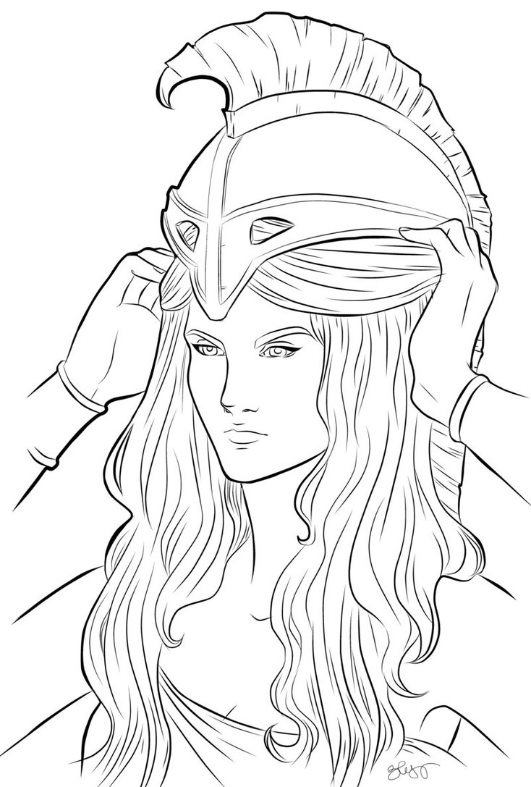
ATHENA
Goddess of Wisdom, Courage and Inspiration
Symbolizing these inspirational achievements by women
- POLITICSBUSINESSTECHNOLOGYARTPHILANTHROPYFASHION
Women in Politics
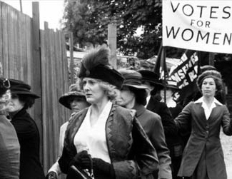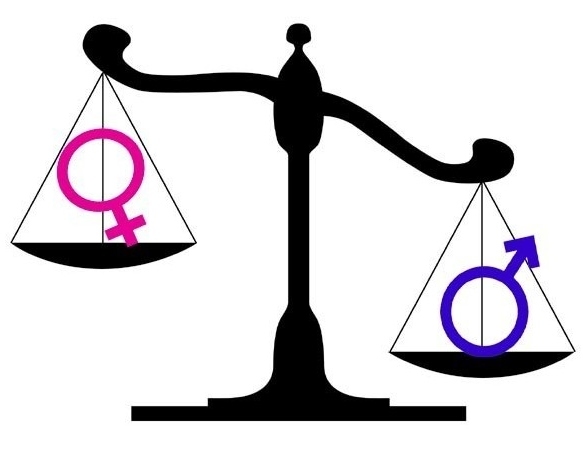 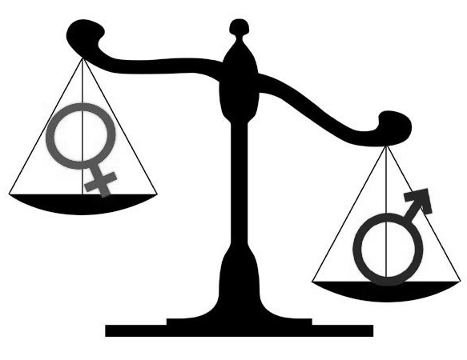Woman of the Week - Aung San Suu Kyi
"Democracy is not perfect. But it gives you the chance to shape your own destiny." Aung San Suu Kyi
Women in Business
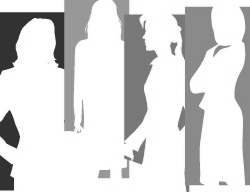Woman of the Week - Jessica Alba
Jessica Alba has recently announced the launch of "Honest Beauty", a new beauty line focused on the same values as the hugely successful "The Honest Company"- natural ingredients for an amazing price. This line will focus on celebrating female diversity, something that is often amiss in traditional makeup lines; Alba claims she often has to mix several shades to get the right one for her. This line dropped just as reports surfaced that The Honest Company was valued at around $1.7billion in a recent funding round.
"My theory is that is that if you look confident you can pull off anything- even if you have no clue what you're doing." Jessica Alba
Women in Technology

 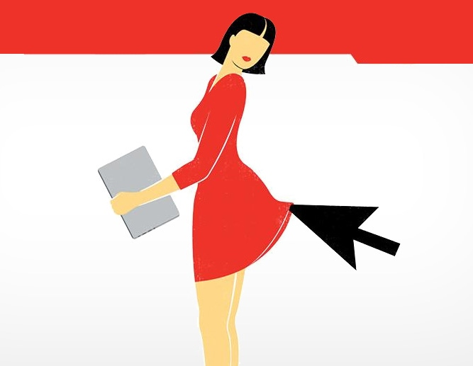 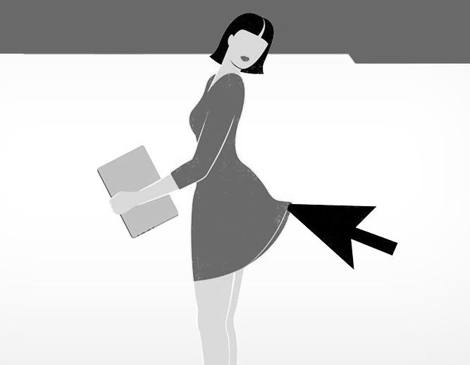
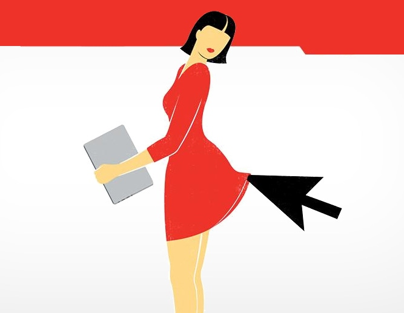 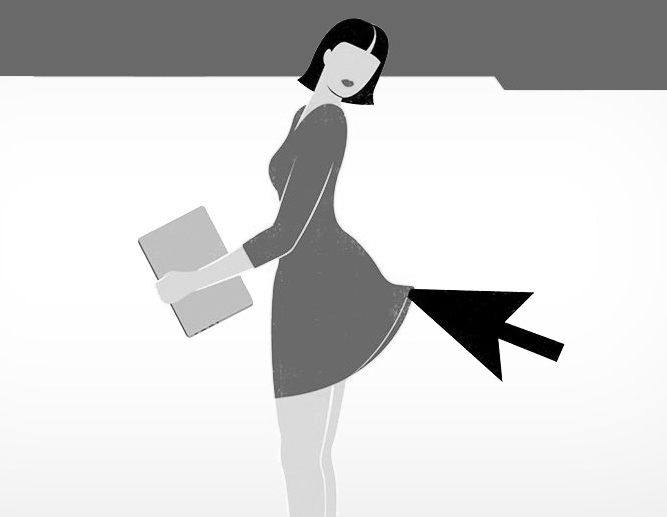Woman of the Week - Jenny Griffiths
"I've always viewed science and technology as quite playful" Jenny Griffiths
Jenny Griffiths, founder of Snap Fashion, has received an MBE on the Queen's Birthday Honours list. Snap Fashion is an app that allows people to search for items across various fashion outlets by uploading images of the product they want- the app then suggests where they can buy similar items based on style, colour or texture of the product. Griffiths started the company whilst studying at University of Bristol, and wrote the initial algorithms herself. Griffiths is now adapting the technology to use in fitting rooms, a project that has earned Snap Fashion, £1million grant from Innovate UK. Griffiths says she has "no idea" who put her forward for the honour, but is delighted.
Women in Art
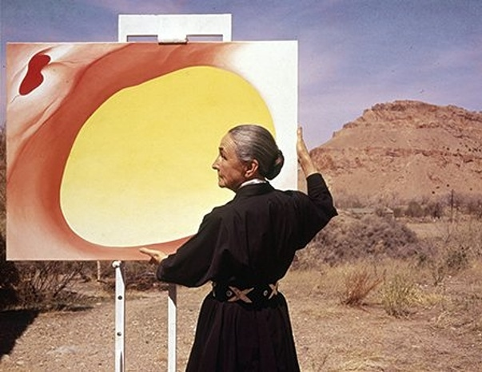 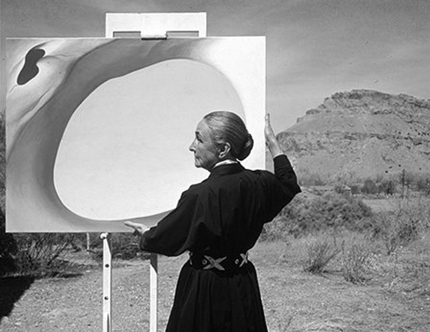Woman of the Week - Katharine Viner
Katherine Viner was recently announced as the first female Editor-In-Chief of the Guardian. Viner joined The Guardian in 1997, following stints at both Cosmopolitan and The Sunday Times. The Guardian published Viner's first-ever article whilst she was still at school, before she went on to read English at Oxford. Her appointment marks the first time in The Guardian's 194-year history that the newspaper has been run by a woman; somewhat remarkable given it's notoriously liberal stance.
"You can tell some people are just a bit concerted that their boss is a woman. " Katharine Viner
Women in Philanthropy
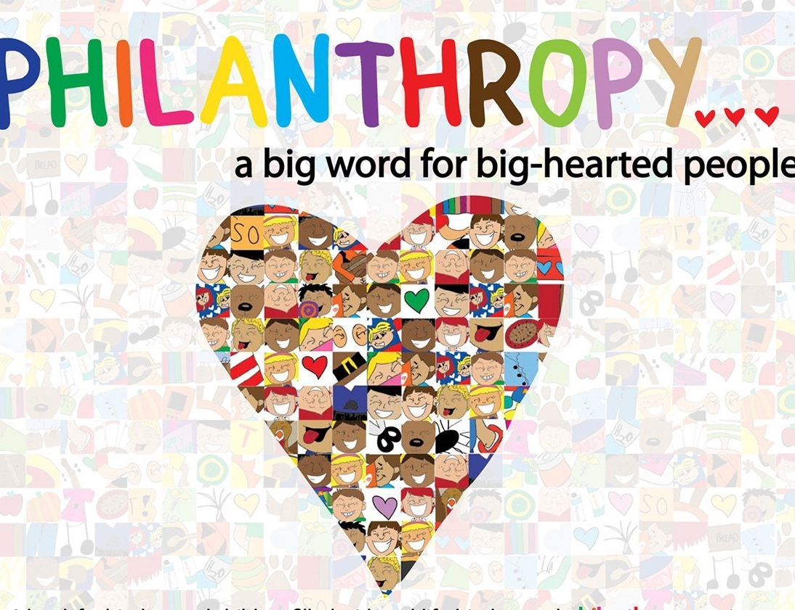 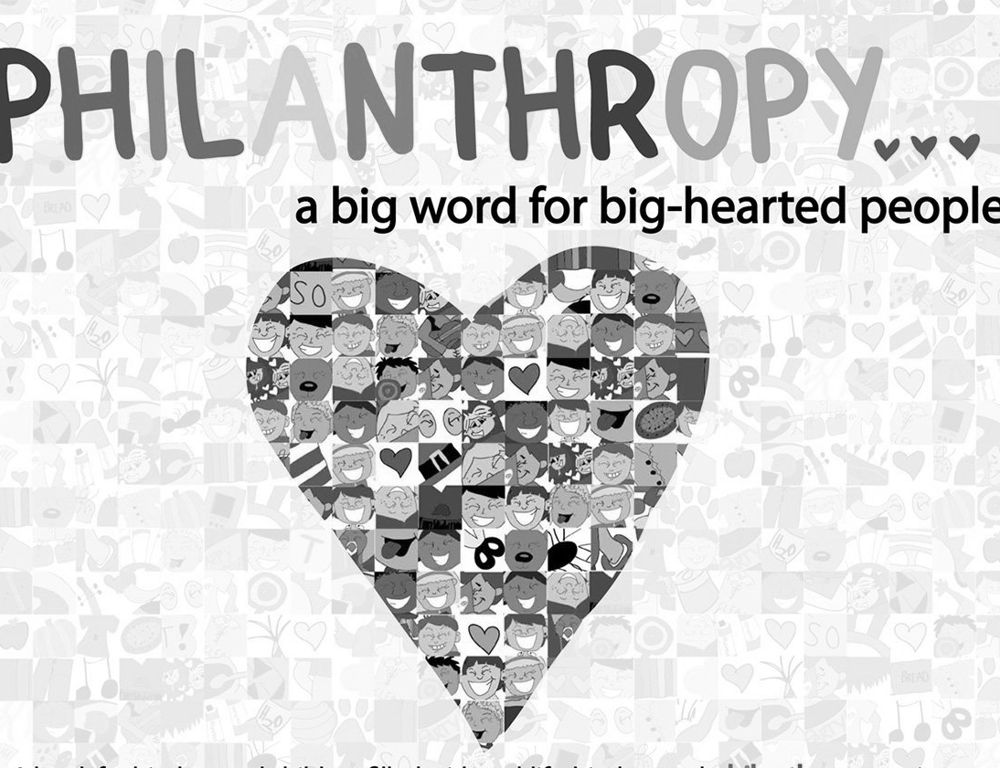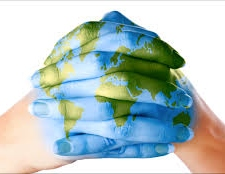 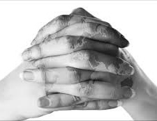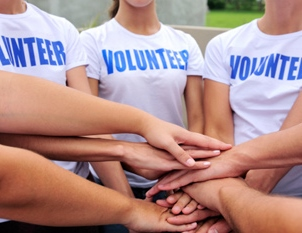 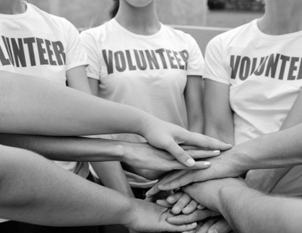Woman of the Week - Nikki Reed

"You can be a meat-eater and carry a faux-leather bag because it means you’re doing SOMETHING." Nikki Reed
Actress and social activist Nikki Reed has recently released a handbag collaboration with Freedom of Animals, to highlight the mistreatment of animals and promote sustainable fashion. A noted animal rights activist, Nikki wants people to think more about the consequences of their actions towards animals, stating on her Instagram that "you can be a meat-eater and carry a faux-leather bag because it means you're doing SOMETHING." Proceeds from the sale of the bags will go towards the Ian Somerhalder Foundation, a charity dedicated to educating people about sustainability.
Women in Fashion
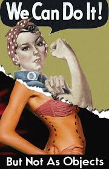 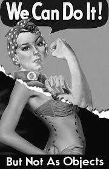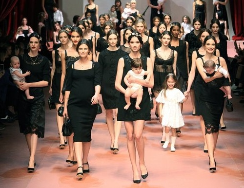 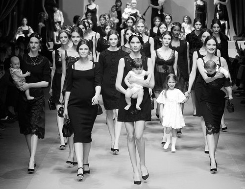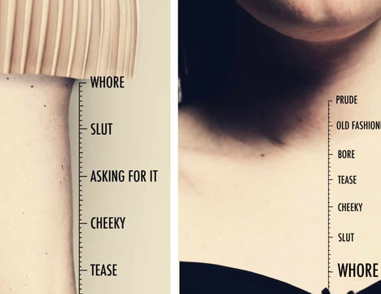 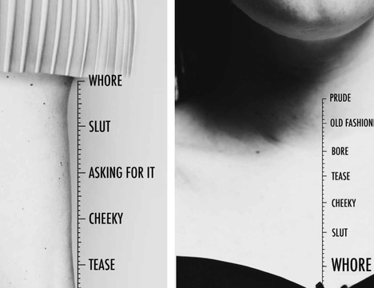Woman of the Week - Tammy Kane
Tammy Kane is the elder sister of designer Christopher Kane, but what many fail to recognise is that she is also the driving force behind the business. Having studied at Herriot Watt University, she steered her younger brother to study at Central St Martins, the prestigious fashion school- and prepared him for the ups and downs of studying fashion. Once her brother had completed schooling, she gave up her job to help start the fashion line- and has been irreplaceable ever since. She is now creative director of the label.
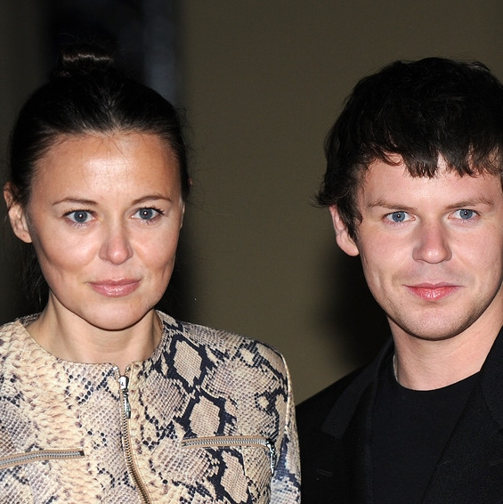"Tammy is very strong -she can have so many roles, she is a chameleon."- Christopher Kane Tammy Kane